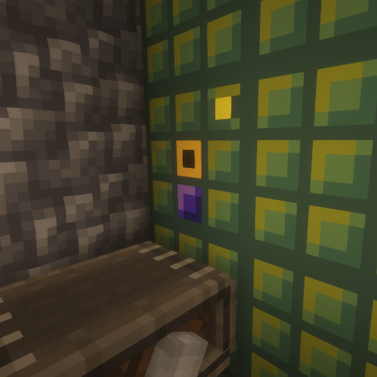

Akin to my FEH mod for EMI, I have written a fabric port of Compact Machines in scala. It supports compact machines. I made a custom texture pack based off the original forge version. Tunnels let you transfer items, fluids, and energy in and out of the compact machine.
